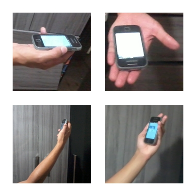

JLogam - JavaScript Libary for Open Gestures Acessibility Mobile
This is a demonstration of command line interface. Insert on the form below the word "#JLogam" and press ENTER for simulate the command
This is a simulation of a GUI or Graphical User Interface. It is simple, just click on the button.
Tweet #JLogamTo use this NUI is very simple, you just have to do the cheers gesture as the pictures below.
